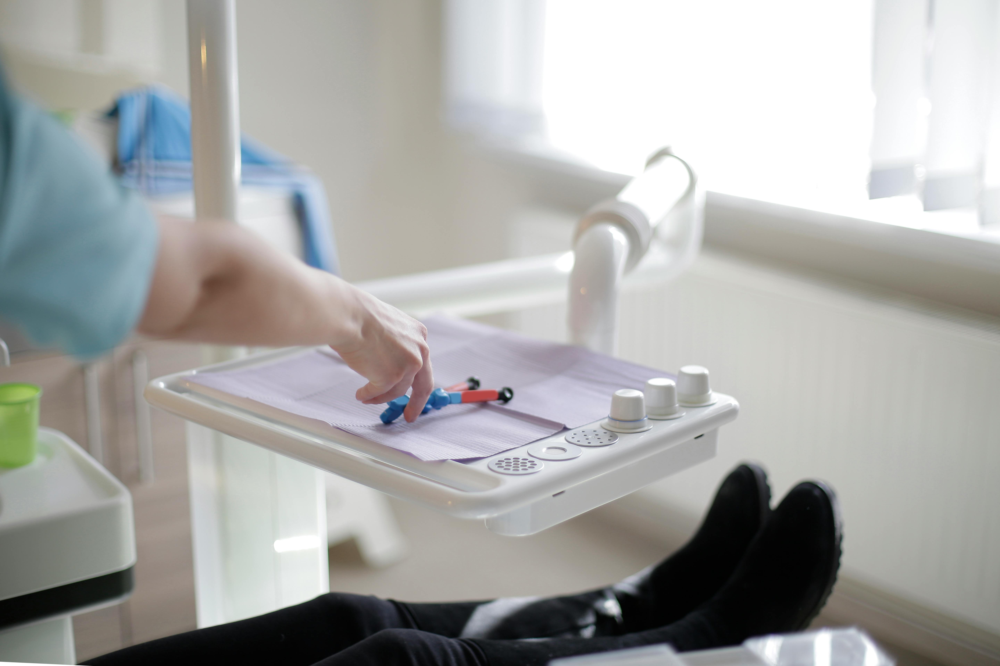
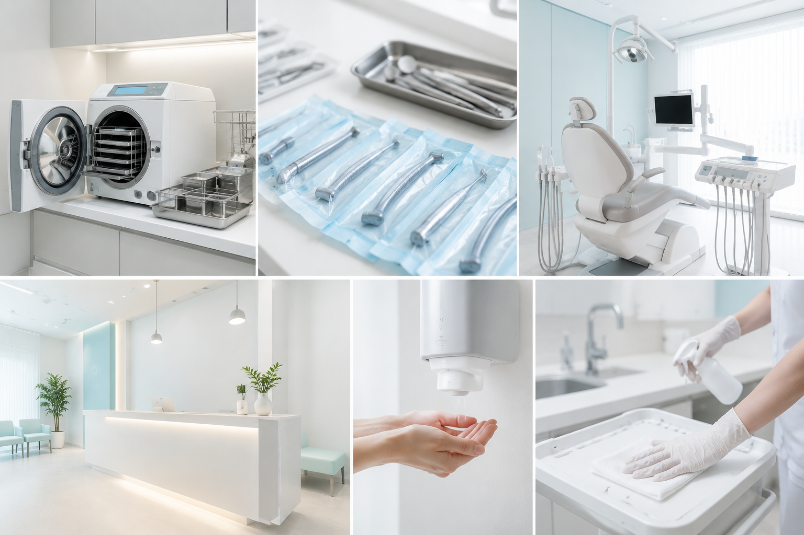
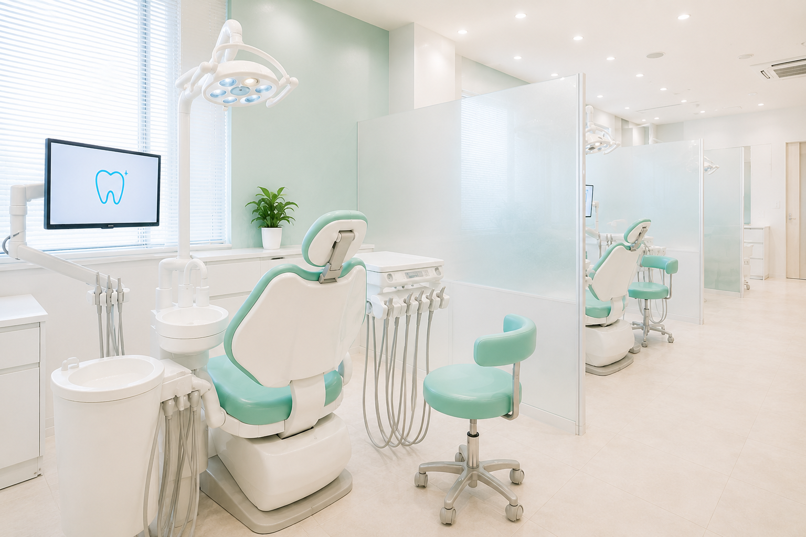

当院について
安心して通える環境づくり
- 清潔感と衛生管理の徹底
- 当院では、患者さまが安心して診療を受けていただけるよう、徹底した衛生管理体制を整えています。使用する器具はすべて滅菌・消毒を行い、可能なものは使い捨て製品を採用するなど、院内感染のリスク低減に努めています。また、診療スペースはもちろん、待合室や共用部においても清掃・管理を徹底し、常に清潔な環境を維持しています。目に見える部分だけでなく、細部にまで配慮を行き届かせることで、どなたにも安心して通っていただける環境を整えています。
- 落ち着けるやさしい空間デザイン
- 当院では、歯科医院に対する不安や緊張を少しでも和らげられるよう、空間づくりにもこだわっています。院内はやわらかな色合いを基調とし、自然光を取り入れた明るく開放的な設計とすることで、圧迫感のない落ち着いた雰囲気を演出しています。また、インテリアや照明にも配慮し、視覚的にも心地よく過ごせるよう工夫しています。歯科医院特有の「こわい」「緊張する」といったイメージをやわらげ、リラックスした状態でお過ごしいただける空間を目指しています。
- プライバシーに配慮した診療環境
- 当院では、患者さまが安心して治療やご相談を受けていただけるよう、プライバシーに配慮した診療環境を整備しています。診療スペースは周囲の視線や音が気になりにくい設計とし、必要に応じて個室や半個室をご用意するなど、落ち着いて過ごせる環境を確保しています。お口のお悩みはデリケートな内容も多いため、他の患者さまを気にすることなくご相談いただける体制を整え、安心して通院いただける環境づくりに取り組んでいます。


